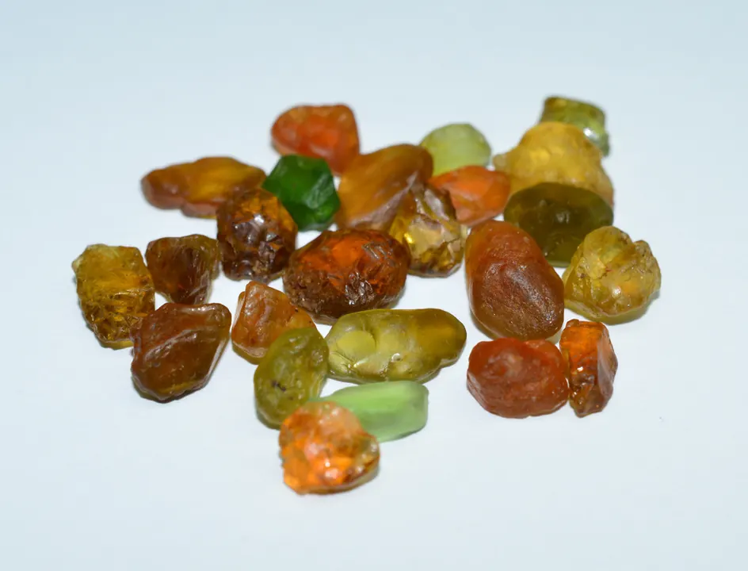

碧璽：彩虹礦物之王
碧璽是「彩虹礦物」——同一顆晶體可以綠裡透紅（西瓜碧璽），還能帶電。

核心定義
碧璽（tourmaline）是硼矽酸鹽礦物家族，化學式極複雜（含硼、鋁、鐵、鋰等）——它被譽為「彩虹礦物之王」，顏色涵蓋幾乎所有色系。硬度 7–7.5、折射率 1.61–1.68（雙折射高）、比重 3.0–3.2。英文名源於僧伽羅語「toramalli」（混合寶石）。
明星品種：帕拉伊巴碧璽（Paraíba，霓虹藍綠、最貴）、西瓜碧璽（外綠內紅）、盧比來碧璽（Rubellite，豔紅）。碧璽是「多色奇蹟」——同一晶體可呈現多種顏色（多色性與色帶）。
特徵與分類
| 品種 | 顏色 | 市場 |
|---|---|---|
| 帕拉伊巴 | 霓虹藍綠 | 頂級天價 |
| 西瓜碧璽 | 外綠內紅 | 稀有收藏 |
| 盧比來 | 豔紅 | 高端 |
| 綠色碧璽 | 綠 | 主流 |
| 粉碧璽 | 粉 | 受歡迎 |
帕拉伊巴碧璽的「霓虹藍綠」來自銅（Cu）與錳——它被譽為「寶石界的霓虹燈」，每克拉價格可達數萬美元；西瓜碧璽的外綠內紅是「雙色同體」的奇蹟——兩者都是碧璽家族的收藏頂點。
科學原理
碧璽的顏色化學極複雜：鐵（綠黑）、錳（粉紅）、鋰（粉綠）、銅（霓虹藍綠）、鎂（棕黃）——元素的組合讓碧璽成為「調色盤礦物」。雙折射高（0.017–0.020）——放大鏡下可見「重影」。
碧璽的「電氣石」本質：加熱或摩擦時會產生靜電（壓電/熱電效應）——「電氣石」之名由此而來。鑑定：重影（雙折射）、比重 3.0–3.2、多色性明顯——與橄欖石（比重 3.3）、綠色綠柱石區分。
鑑定與鑑別方法
- 看重影：碧璽強雙折射
- 折射儀：1.61–1.68
- 看多色性：明顯
- 找色帶：碧璽常見
- 實驗室定品種（帕拉伊巴需銅檢測）
市場行情與保養建議
行情：帕拉伊巴碧璽是「寶石界的藍鑽」——頂級每克拉數萬美元；西瓜碧璽稀有收藏；盧比來紅碧璽高端；普通綠粉碧璽親民。碧璽是「從平價到天價」跨度最大的寶石之一。
選購：日常選綠粉碧璽（美而親民）；收藏看帕拉伊巴與西瓜碧璽——注意帕拉伊巴的產地（巴西原礦最貴）與加熱處理。
常見誤區
碧璽涵蓋幾乎全部色系——紅橙黃綠藍紫、雙色、多色。它是「彩虹礦物」，不是單色寶石。
「帕拉伊巴」最初指巴西產地，如今非洲、亞洲也出產同色碧璽——產地影響價格，但「帕拉伊巴色」已是顏色名詞。
冷知識
加熱或摩擦會產生靜電吸引紙屑——「電氣石」之名名副其實，它是「會發電的寶石」。
同一晶體外層綠、內層紅——像切開的西瓜。晶體生長時環境變化，讓顏色「分層」。
反直覺觀點
僧伽羅語「toramalli」意為「混合寶石」——古人搞不清它是什麼，乾脆叫「混合」。多到無法歸類，是它的歷史標籤。
霓虹藍綠的帕拉伊巴——銅元素產生的「電光藍」，是寶石世界最特別的顏色之一。彩虹之王的最貴色，是「霓虹」。